Vollständiger Erklärungsleitfaden
O P N LIO — O P N LIO System, Empire of the Wealthy, Smart Pivot, Der Ruf des Königs
Dieser Leitfaden erklärt jedes visuelle Element in den vier Skripten: jede Farbe, Zahl, Linie und jeden Alarm — und was er bedeutet.
Adaptive Linie: grün = Aufwärtstrend, rot = Abwärtstrend. Kreise an Hochs/Tiefs markieren einen "Liquiditätsfußabdruck".
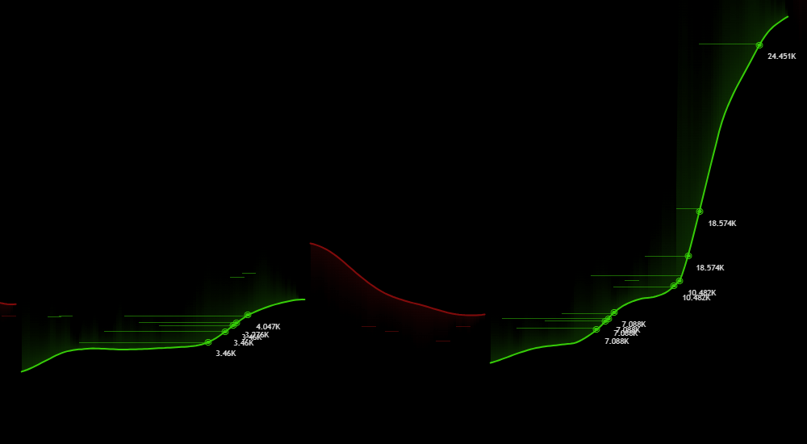
Grüne Box = ungeschlossene Aufwärtslücke. Rot = ungeschlossene Abwärtslücke.
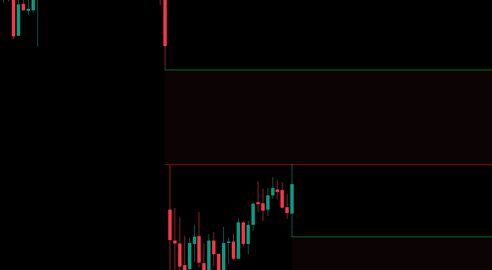
Grün/rote gestrichelte Linie aus echten Hochs/Tiefs.
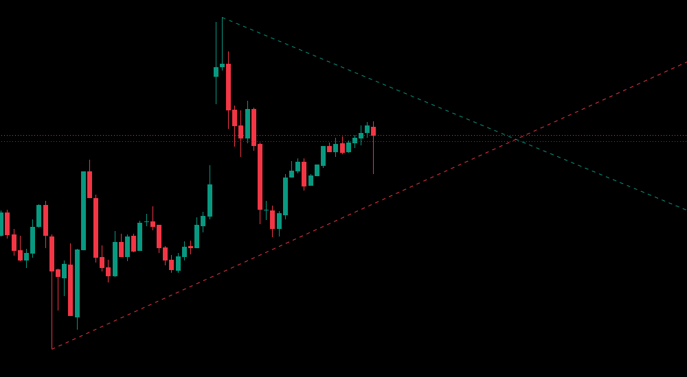
Graue Fläche = Momentumwolke. Cyan = Kernlinie. Rosa = Sofortpfad. Blau = Momentum-Puls. Rot = Gleichgewichtspunkt. Gelb/Orange = Schild (als vierte Linie neben den anderen drei Pfaden gezeichnet).
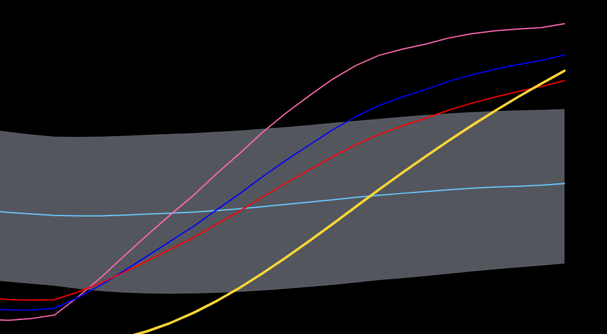
Punktzahl 0-100: Neongrün = sehr positiv, Weiß = neutral, Dunkelrot = sehr negativ.
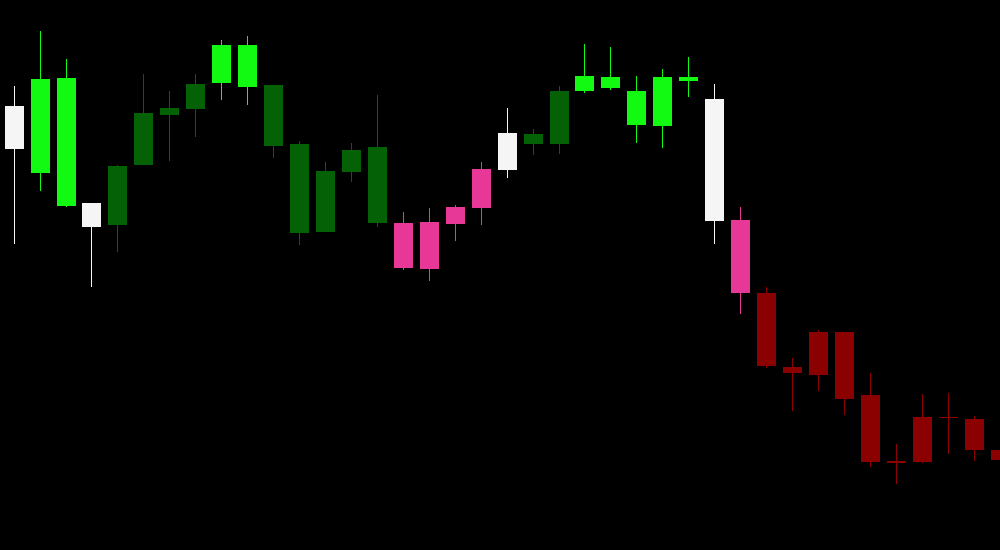
4-Zeitrahmen-Tabelle. "Speed Radar": Call Erlaubt / Put Erlaubt / Bitte Warten.
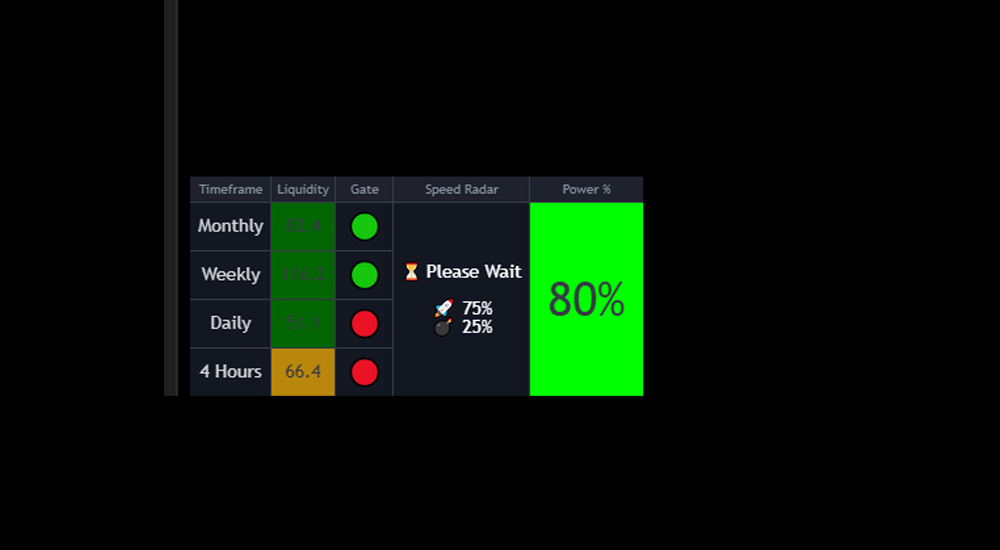
Linie aus proprietärer Formel. Neongrün (starker Kauf), Rot (starke Verteilung). Zonen: -10/10, 10/30, 20/80, 70/90, 100/120.
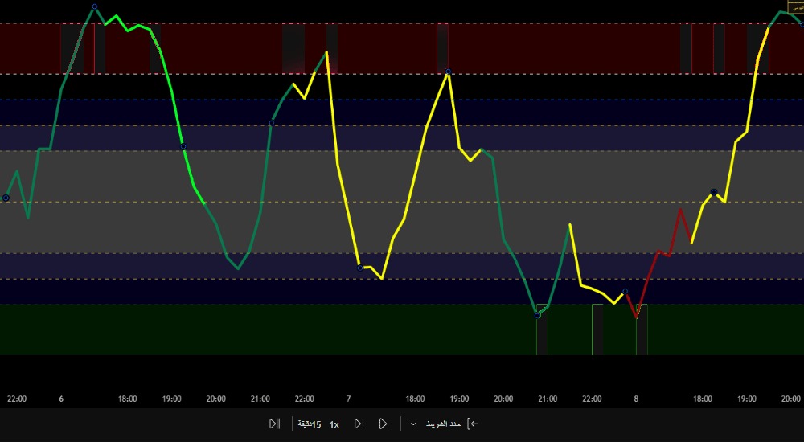
Die -10-Level-Linie selbst (die Kante der starken Verkaufswelle-Zone) wechselt automatisch von Weiß zu einem dicken Dunkelbraun, wenn das Handelsvolumen seinen 20-Kerzen-Durchschnitt übersteigt, während der Pfad dieses Level berührt — ein zusätzliches visuelles Zeichen, dass die Verkaufswelle von echtem Volumen getragen wird.
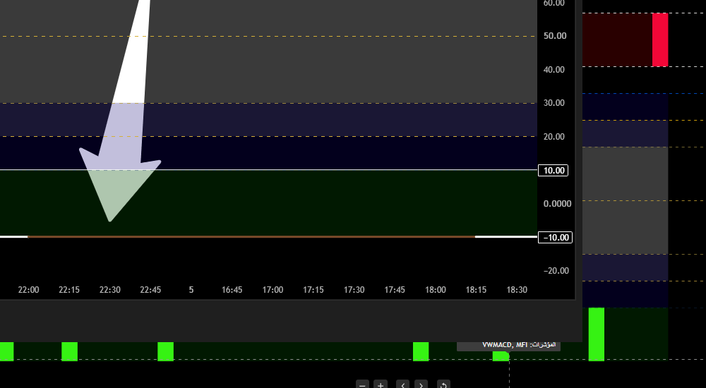
Starke interne Bestätigung beim Eintritt in Zone -10/10 oder 100/120 ändert die Farbe zu einem Neonton.
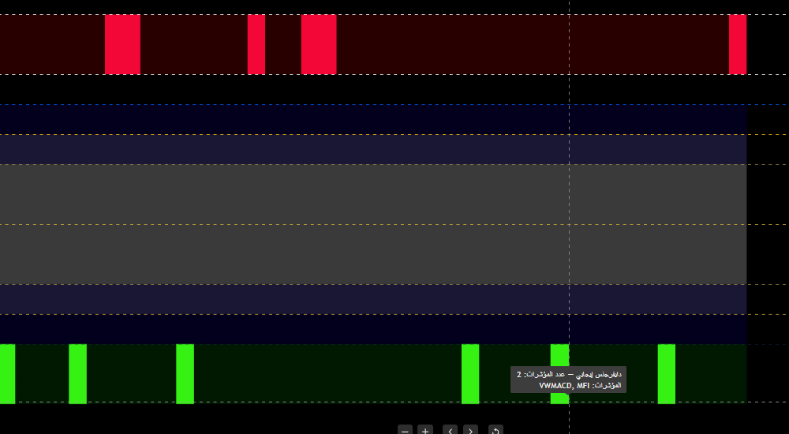
Kreisförmige Linie, die die "Form" des Momentums liest. Neongrün = sehr stark bullisch, Orange = Umkehr von oben, Gold = Umkehr von unten.
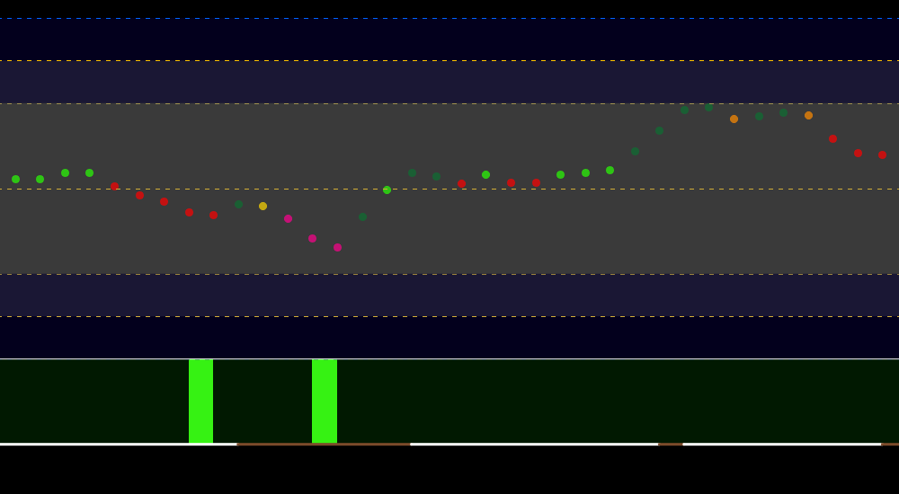
Grüner Hintergrund (Call-Rally): goldene Kerze im Bereich 48-52 nach starker bärischer Kerze.
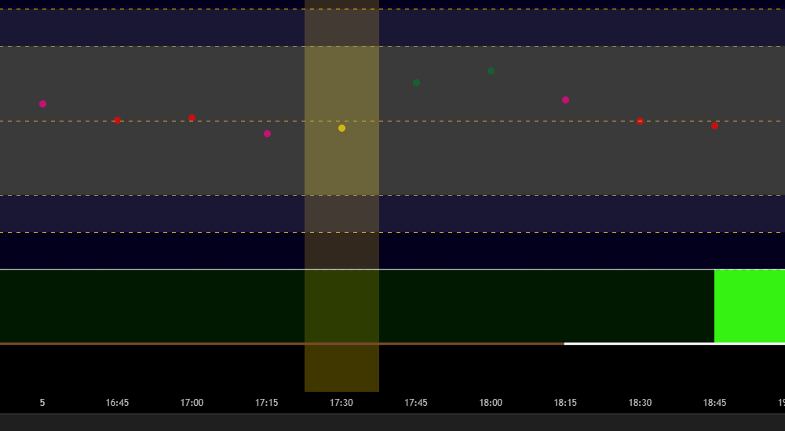
Klassifizierung und Wert für aktuell, wöchentlich, täglich.
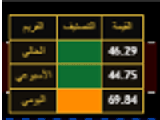
Grün = Widerstand. Rot = Unterstützung. Grau mit Krone = zentraler Pivot (fest). Blau/Gelb = dynamische Zonen.
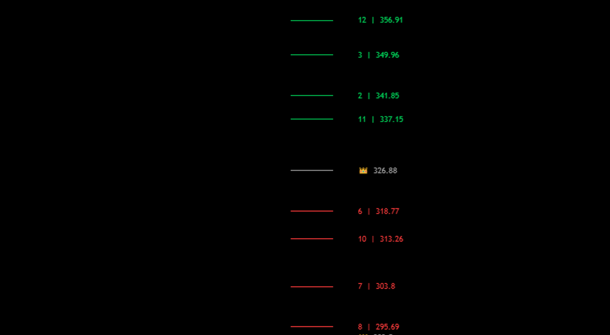
Erste Zahl = Stärkeranking. Zweite = tatsächlicher Preis. Jeder Stern = unabhängiges konvergierendes Level.
Ein Satz: Starker Kauf / Kauf / Warten / Verkauf / Starker Verkauf. Nur beim ersten Wechsel einsteigen.
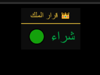
Leichter Hintergrund = wöchentliche Genehmigung. "Call/Put Einstieg" nach 4-Schritte-Sequenz.
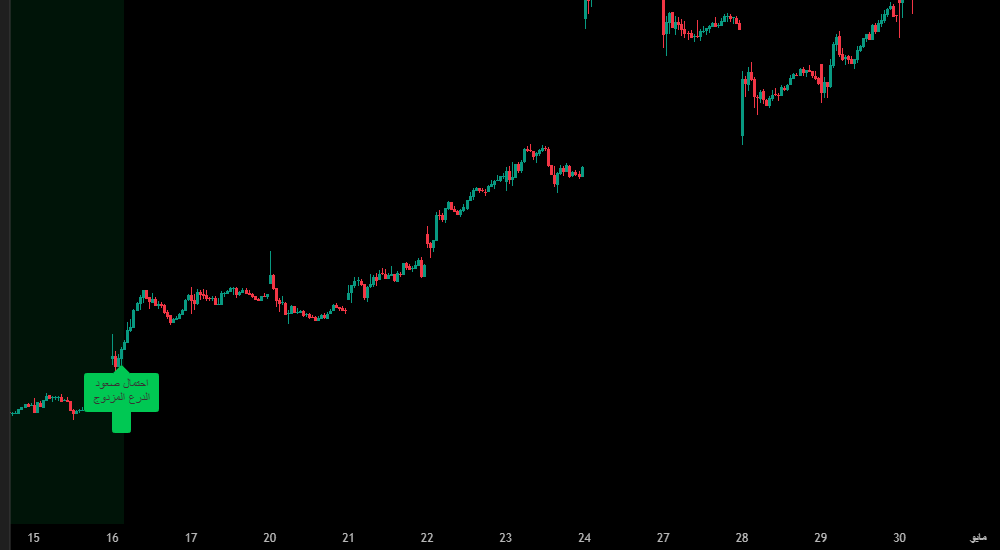
Neon-Hintergrund bei 5+ wiederholten Umkehrkerzen in den letzten 10.
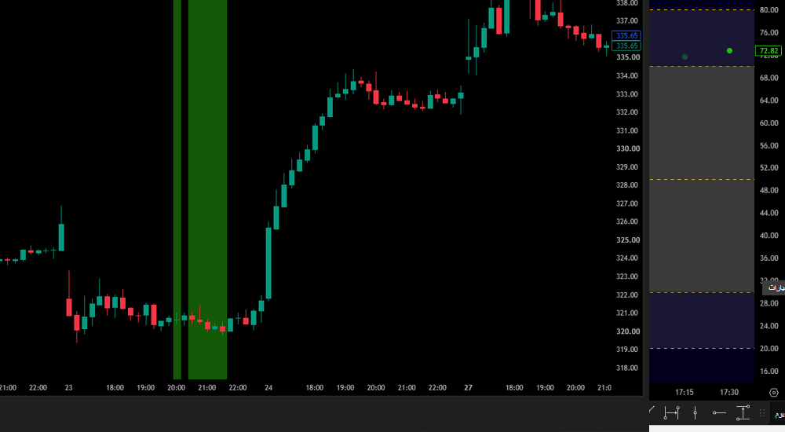
"Warte auf Speed Radar" — endgültige Erlaubnis vom System.
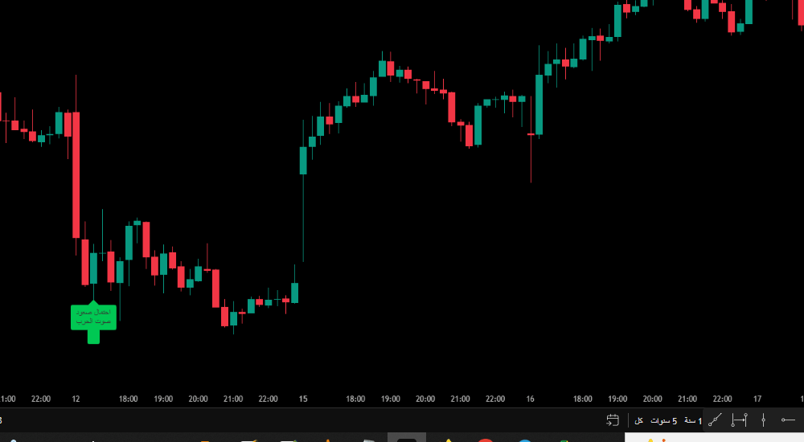
Wichtigste Geheimnisse
Hierarchie ist wichtiger als Anzahl
Wochenschild ← Volumenwolke ← Erweiterte Wolke ← Kerzenfärbung ← Liquiditäts- und Kraftradar zuletzt.
Zeitrahmenkonflikt ist die größte Warnung
Wenn das Wochenschild kauft, aber das Tagesradar schwach ist, warten.
Nur beim ersten Wechsel einsteigen
Häufigster Fehler: nach mehreren Wiederholungen einsteigen.
Übereinstimmung unabhängiger Werkzeuge ist der stärkste Beweis
Alle vier Skripte gleichzeitig einig zu sein, ist die stärkste Bestätigung.
Der Ruf des Königs ist die letzte Verteidigungslinie
Erst die anderen drei prüfen, dann fragen: stimmen Sie noch zu?
Geheimnisse Jedes Einzelnen Skripts
O P N LIO System
Die "Tor"-Berührung in der Erweiterten Wolke ist kein Einstiegssignal — es ist eine Warnung vor einer Entscheidungszone; handeln Sie erst nach der folgenden Kerze. Ein negatives Volumen-Delta zeigt einen schwächer werdenden Trend, selbst wenn die Wolke grün bleibt.
Empire of the Wealthy
Wiederholte Umkehrkerzen des Vollstreckers zeigen keine Richtung — sie zeigen aufgestaute Spannung, die sich umso heftiger löst, je länger sie andauert. Die Ausbruchskerze selbst muss klar klassifiziert sein (stark oder sehr stark).
Smart Pivot
Sterne sind ein echtes Vertrauensmaß: jeder Stern bedeutet ein weiteres unabhängig berechnetes Level, das an derselben Stelle konvergiert. Der zentrale Pivot (Krone) bleibt immer die höchste Autorität.
Der Ruf des Königs
Doppelschild ist langsamer und sicherer; Stimme der Dunkelheit ist schneller und riskanter — verlassen Sie sich niemals allein darauf. Die genaue Übereinstimmung beider ist die stärkstmögliche Bestätigung.
Kombinationsgeheimnisse Zwischen den Vier Skripten
Die vollständige Hierarchie
O P N LIO System ← Empire of the Wealthy ← Smart Pivot ← Der Ruf des Königs. Jede Schicht filtert schwache Chancen heraus.
Smart Pivot als dauerhafter letzter Filter
Egal woher das Signal kommt, prüfen Sie immer zuletzt: sind Sie nahe an einem starken entgegengesetzten Pivot-Level?
Kein erlaubter Konflikt zwischen Schild und Königsentscheidung
Wenn das Wochenschild verkauft, aber Der Ruf des Königs kauft sagt, steigen Sie nicht ein, bis beide übereinstimmen.
Speed Radar ist ein gemeinsamer Kontrollpunkt
Sowohl Kriegsruf als auch Stimme der Dunkelheit erfordern das Warten auf die Speed-Radar-Erlaubnis vor jedem echten Einstieg.
Alarm-Aufschlüsselung Pro Skript
O P N LIO System (der Reihe nach)
1) Trendwechsel - Volumenwolke. 2) Gap-Retest. 3) Trendlinien-Ausbruch. 4) Kauf/Verkauf-Rally - Schild. 5) Tor-Berührung - Erweiterte Wolke. 6) Sehr positive/negative Zone - Kerzenfärbung. 7) Rocket/Bomb - Liquiditäts- und Kraftradar.
Empire of the Wealthy (der Reihe nach)
1) Liquiditätspfad-Signal. 2) Mögliche Umkehrkerze. 3) Call/Put-Rally - Der Vollstrecker. 4) Neun separate Kerzen-Klassifizierungsalarme.
Smart Pivot (der Reihe nach)
1) Wöchentliche zentrale Pivot-Berührung. 2) Monatliche zentrale Pivot-Berührung.
Der Ruf des Königs (der Reihe nach)
1) Kauf/Verkauf - Urteil. 2) CALL/PUT Doppelschild. 3) Call/Put Stimme der Dunkelheit. 4) CALL/PUT Kriegsruf.